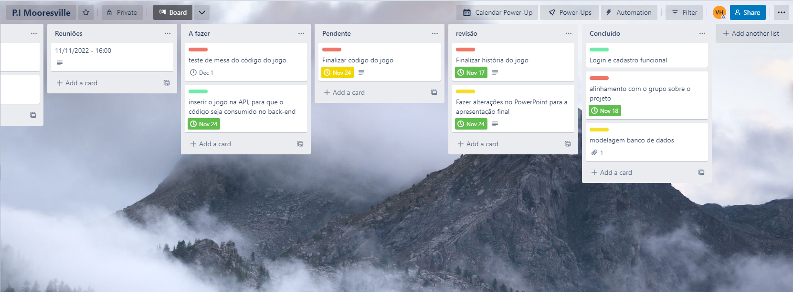

Mooresville é uma cidade real no condado de Limestone, norte do Alabama e possui
apenas 67 habitantes, é uma pacata cidade em um dos mais cômicos
Estados americanos. A cidade possui um grande background histórico, principalmente por ter sido palco da
guerra de secessão. Foi escolhida como palco para a história do Grupo Urano, não só por ser uma cidade
histórica, mais por seu posicionamento geográfico e por ser extremamente pacata, afinal, quem iria
procurar nosso protagonista em Mooresville, Alabama...
1- Não se esqueça de verificar se está digitando as opções corretamente dentro do jogo para evitar
problemar
2- Suas decisões afetam a continuidade do jogo, então pense bem antes de tomá-las, pois elas
certamente podem te levar a morte e a perca total do seu progresso no jogo
3- Apesar de o jogo ser baseado em uma história linear, sua escolhas podem te levar a um final...
diferente
4- Não se esqueça de se divertir muito, e tome cuidado com os "Animais".
Meu tio Tyler era uma das personalidades mais bizarras que se pode imaginar, mas nem sempre ele foi assim.
Nós nunca fomos realmente muito próximos, porém ele sempre aparecia para ver minha vó. depois daquela porcaria que aconteceu com ele... ele sumiu.
Minha vó sempre o defendia.
- Ele é um homem ocupado e reservado, não tem como vir visitar a gente, porém ele é um dos melhores cientistas deste país. - Dizia ela.
Minha vó também vivia me contando histórias sobre ele:
“Quando mais novo, seu tio Tyler era um homem muito estressado e mal conseguia um projeto aprovado na sua empresa, ainda bem que ele encontrou uma mulher boa para concertar ele.
Suzana fez seu tio mudar por completo, isso foi ótimo, eu nunca o vi tão feliz na minha vida, depois dela ele também cresceu muito como cientista na empresa.”
...
Em um churrasco quando eu tinha 9 anos eu percebi que tio Tyler tinha uma mania de ficar murmurando uma música, perguntei para ele que música era essa e me respondeu com um sorriso no rosto:
-oiiii garotão, essa música é que minha esposa fez quando completamos 1 ano de casadoS, fomos ao caribe na ocasião.
Na viagem, escutei ela no barco muitas vezes, essa música grudou na minha cabeça e agora vivo a murmurá-la até hoje, porque amo ela... tanto a música quanto minha Suzana.
......
Ele era tão feliz e sorridente com aquela mulher, eles estavam prestes a ter um filho quando aconteceu. Um certo dia, Suzana saiu de carro para fazer algumas compras de essênciais e um caminhoneiro bêbado bateu no carro dela. O bebê e ela morreram na hora.
A última vez que vi meu tio Tyler foi no enterro de Suzana, ele chorava na frente do caixão e murmurava aquela mesma música.
Após esse ocorrido ele ficou estranho....
Quando eu tinha 15 anos, tio Tyler mudou-se para o sul, e desde então tive poucas “notícias” sobre ele, se é que se pode chamar algumas cartinhas de Feliz natal de notícias, já faz mais de 5 anos que não o vejo.
Então você pode imaginar meu estado de surpresa em me encontrar dentro do meu carro, dirigindo em direção a Mooresville, uma cidadezinha pacata no norte do Alabama com incríveis 60 habitantes... Rumo a casa do meu tio Tyler.
Chegando ao endereço que me foi passado, me encontro parado em frente a enorme casa de 2 andares que parecia ter saído de um seriado de comédia dos anos 60.
Tyler, que naquela altura já estava a 6 anos sem dar nenhum sinal de vida, me ligou numa manhã de segunda-feira e pediu-me que fosse até Mooresville, ele teria que viajar a um congresso de ciências no Rio de Janeiro e não tinha mais ninguém que pudesse cuidar de seus “animais” enquanto ele estivesse fora.
Animais... Lembro de minha mãe dizer que ele odiava qualquer tipo de animal, o que será que o levou a mudar de ideia, e agora criar animais em sua casa, pensando bem...
Ele sequer citou qual tipo de animais ele tinha aqui, eu mal sei o que estou fazendo aqui, onde raios estava com a cabeça de achar que isso seria uma boa ideia, mas ele parecia estar realmente precisando de minha ajuda. )
senhora misteriosa:
- Você é sobrinho do Tyler Dawnson?
Disse uma voz rouca, com um forte e típico sotaque caipira do Sul, me tirando do transe em que eu estava.
(Quanto tempo eu tinha ficado parado ali encarando a porta?) -Sim, sou eu!
Digo me virando, para encarar uma senhora, de aparentemente uns 65 anos, com um vestido preto bordado, que parecia uma obra da Guerra de Secessão, a senhora segurava um gato preto em uma mão e uma carta selada na outra.
senhora misteriosa:
- Prazer, me chamo Joanna Smith. Moro nessa casa aqui em frente, é um prazer te conhecer garoto, na verdade, é um prazer conhecer qualquer parente do Tyler, ele costuma ser um homem tão solitário...
- Pois é.... tio Tyler consegue ser uma pessoa bem retraída as vezes!
Digo eu, demonstrando uma intimidade inexistente.
Joanna:
- A anos que somos vizinhos e nunca vi ele conversar com ninguém, ou levar alguém a sua casa... Bom, imagino que você esteja cansado da viagem e não vou ficar te incomodando com minha conversa mole. Esse é o gato de Tyler, Apolo, Tyler também deixou esta carta para você com algumas instruções.
-Muito obrigado, Sra. Joanna!
Digo pegando a carta e começando a abrir o selo.
Joanna:
- ESPERA!
Gritou mudando completamente de expressão, aquela Aura amigável havia sumido.
– Tyler me pediu para aconselhá-lo a abrir a carta só quando estivesse dentro de casa.
empurrou o gato preto em minhas mãos, virou suas costas e em um passo acelerado voltou para sua casa e bateu a porta sem dizer mais nada.
(Tudo isso que acabou de acontecer foi muito estranho... aquela senhora que antes parecia tão amigável, subitamente mudou. Sua expressão parecia de.... medo!) depois de me perder por mais alguns minutos em meus pensamentos, decido dar uma olhada em volta do velho terreno da casa.
Atrás da casa havia um jardim, com plantas que pareciam que não viam um Regador a séculos.
Enquanto estou olhando, ouço um barulho atrás de um dos arbustos, e enquanto me aproximo para ver o que era, sinto uma aflição imensa... parece que algo não está certo...
Apollo:
- !!!!!!!!! GHWIII MEEEEOOOWM!!!!
minha alma quase sai do meu corpo, de tão grande susto que levei, eu estava tão desligado que até me esqueci que o bendito gato estava comigo.
Depois de me recuperar do susto, decido deixar o arbusto para lá e entrar dentro da casa.
O Hall da casa era imenso, com três portas que levavam a cômodos diferente, no teto, um lustre que provavelmente compraria o meu sedan velho, e no chão, um grande tapete persa, que se estendia até o pé de uma escada de aproximadamente 30 degraus, tudo que eu sabia sobre a profissão de meu tio, era que ele era um renomado cientista, mas eu realmente não fazia ideia de qual era sua área de atuação, bom, agora sei que a remuneração deve ser excelente.
Apolo então, saltou do meu colo e correu pra dentro de uma das três portas que haviam no HALL, e eu então, decidi ler a carta que Joanna havia me entregado.
A carta era curta e bem direta, possuía uma pequena mensagem do meu tio e algumas regras, a carta dizia:
“ Olá, garotão. Espero que esteja tudo bem. Sei que tenho sido muito ausente nos últimos anos e gostaria que as coisas tivessem sido diferentes, mas não posso mudar o que já passou. Gostaria que houvesse outro jeito, um jeito em que eu não precisasse te envolver nisto, porém, o avanço científico que proporcionará, está acima de qualquer vínculo entre nós. Espero que me perdoe. Voltarei dentro de 3 dias, uma vez dentro da casa, você não poderá sair mais. Não se preocupe, na dispensa tem tudo que você vai precisar nesses tempo. Se você quiser sobreviver, precisará seguir estas regras abaixo:
1- Sempre que andar pela casa, garanta que você tenha uma lanterna carregada por você, quedas de e luz são comuns por aqui.
2- Não fique no escuro total por mais de 2 minutos, quando dormir deixe um abajur ligado e garanta que não vai acordar no meio da noite, caso acorde, não abra os olhos. Caso tenha uma queda de luz e sua lanterna não funcione, corra para dentro do banheiro da suíte master no segundo andar, eles não podem entrar lá. Durma no banheiro nessa noite, pela manhã, tudo deve estar mais tranquilo.
3- Se ouvir um assovio equanto estiver em algum cômodo da casa, não olhe para trás, ajoelhe-se no lugar que está, feche os olhos e diga com autoridade “O mestre chegará a qualquer momento, volte a sua posição”, caso você ouça um suspiro profundo e passos, espere até que os passos fiquem distantes, vá para seu quarto e durma. Caso após você dizer como foi instruido, uma voz gutural dizer “ Ainda temos tempo”, aproveite que está ajoelhado e comece a rezar para que sua morte seja rápida e indolor.
4- Não abra a porta da frente para ninguém após as 21:00, mesmo que a pessoa lá for a diga ser eu e seja semelhante comigo, eu não estarei aí, eles sabem imitar muito bem..
5- Por fim, não abra a porta na cozinha que dá ao porão, ela deve permanecer fechada todo tempo, caso em qualquer um dos dias você a veja aberta, entre no banheiro citsdo anteriormente e fique lá até eu voltar.
6- NÃO DURMA NA SUITE MASTER.
Seguindo essas regras, tudo deve ficar bem. Nos falamos na minha volta. Boa sorte!”
Assim que terminei de ler a carta, um arrepio subiu pela ponta dos meus dedos do pé, até a cabeça. O que foi tudo isso que eu acabei de ler? Não consegui assimilar as informações… então percebo que a carta diz que uma vez dentro da casa eu não posso sair, como assim? Me viro e vou até a porta, viro a maceneta e nada. A porta está trancada, e não tem nenhuma chave a vista, será que tudo isso é real? Quer dizer, só pode ser o tio Tyler me pregando uma peça, algum jeito sádico de recriar uma intimidade que talvez tivessemos no passado.
Após diversas tentivas frustadas de abrir a porta, decido subir as escadas e descobrir como era o meu quarto, então subo as escadas e me deparo com um extenso corredor que leva a 4 quartos diferentes, 3 portas simples de um lado e do outro, uma entrada grande com uma porta dupla, claro que s tratava da suíte master da casa. Logo percebo que está extremamente escuro no segundo andar, olha para meu relógio e vejo que ainda são 15:00. Logo começo a transpirar e sentir a estranha sensação de que não estou sozinho, então me lembro da regra de número 2, não ficar no escuro por mais de 2 minutos. Então sou acometido de uma grande aflição, olho em volta e para meu alívio encontro um interruptor de luz, assim que o aciono, as luzes do corredor de acendem e instantaneamente aquela estranha sensação passa, eu sempre fui muito cético, mas cada minuto em que eu passava nessa casa, me fazia entrar em choque com minhas crenças pessoais.
Como nas regras estava explícito que eu não deveria dormir na suíte master, decido checar ela primeiro. Abrindo o portal de acesso ao quarto, sinto uma mudança de temperatura incrível, o quarto era extremamente gelado, nele possuía uma porta que eu imagino levar ao banheiro, passo meus olhos rapidamente pelo closet que estava aberto e minha alma congela quando penso ter visto um par de olhos me encarando de dentro da escuridão que envolvia aquele closet. Quando firmo meu olhar na direção em que pensei ter visto os olhos, não havia nada lá. Após isso, decido fechar a porta da suíte e verificar os outros quartos. As duas portas mais ao fundo estavam trancadas, o que me levava ao primeiro quarto do corredor e minha última chance, nem morto eu dormiria naquela suíte. Quando giro a maçaneta, a porta se abre e dou de cara com um quarto humilde, que possuia uma cama, um armário pequeno e uma escrivaninha com uma cadeira. Coloco, finalmente, minha mochila no chão e vou em direção a janela na intenção de abri-la para aliviar um pouco do cheiro de mofo presente no quarto. Quando chego a janela, olho para baixo e meu corpo estremece ao ver Joanna, parada na calçada olhando para mim, ela não parecia ter expressão nenhuma em seu rosto. Eu queria sair dali, queria parar de encará-la, porém meus músculos não respondiam aos comandoS, eu não conseguia me mover, estava completamente paralisado. Depois de intermináveis segundos parado ali, sem que nenhum de nós dois nos movessemos, Joanna simplesmente virou a cabeça como se ouvisse algo, e começou a caminhar na direção do suposto. O Stress foi tão grande, que eu desmaiei.
Acordei deitado no chão, primeiramente não reconheci o ambiente em que estava, olhei para meu relógio e eram 2:45 da manhã, eu estava no escuro e logo aquela aflição encontrou seu caminho de volta até mim. Quase entro em desespero completo quando percebo que estou dentro da suíte, no escuro total e acordado no meio da noite. Logo após ter essa realização, eu escuto uma voz.
- Quanto tempo não vejo sangue quente por aqui. – diz a voz rouca, que retumbava de todos os cantos do quarto sem deixar pista de onde se originára.
-Q… Quem está aí? – eu respondo vacilante, porém sou acometido por nada além de silêncio.
Então, eu sinto uma mão tocar meu ombro, agora com meus olhos acostumados com a escuridão, corro até a direção da porta e saio para o corredor, este que estava iluminado, olho para trás, para dentro do quarto escuro e vejo apenas uma silhueta que não consigo definir o que era, me olhando e indo para trás até sumir na escuridão. Era como se a coisa não tivesse a forma, ou pelo menos sua forma não seguisse nenhum dos padrões aceitáveis de existência.
Quando me viro para o corredor, percebo uma peculiaridade. As portas dos demais quartos, que estavam trancadas, agora estavam abertas… abertas não, escancaradas. Me aproximo e entro no primeiro quarto. Ele estava completamente destruído, os móveis virados de cabeça para baixo e no chão havia um lampião, então eu me abaixo e pego-o, nunca se sabe quando vai precisar.
Entrando no outro quarto, vejo que na verdade é um escritório, com diversos livros e troféus científicos. No meio do escritório uma bela mesa de madeira maciça servia de descanso para um caderno aberto. Sento-me na Grande poltrona para ler do que se de trata.
“ Tentas tentativas e nada… cheguei tão perto com o 61°, mas ainda falta algo para que o experimento fique perfeito, sangue fresco… e esse sangue precisa ser compatível com o meu, afim de que ela possa me reconhecer. Eu não deveria fazer isso, mas acredito que essa seja a única solução. Espero que Deus me perdoe por isso”.
Trello é um aplicativo de gerenciamento de projeto baseado na web originalmente desenvolvido em 2011 pela então
Fog Creek Software. Em 2017, foi adquirido pela empresa australiana Atlassian. Ele opera um modelo de negócio freemium....

O trello foi selecionado como plataforma de organização para o projeto. Clique aqui para ver o painel com mais detalhes
Fluxograma das escolhas e caminhos que o jogo percorre até alcançar seus finais, desenvolvido no Diagrams.Net. O diagrams.net é um software de desenho gráfico com multiplataforma gratuito e de código aberto desenvolvido em HTML5 e JavaScript.
Sua interface pode ser usada para criar diagramas como fluxogramas, wireframes, diagramas UML, organogramas e diagramas de rede....
Para ver o diagrama com mais detalhes. Clique aqui para ver o painel com mais detalhes
O Algoritmo que controla as escolhas do usuário foi desenvolvido na linguaguem java.
São condições de If e else, que direcionam a trilha do usuario de acordo com as escolhas que foram tomadas....
.png)